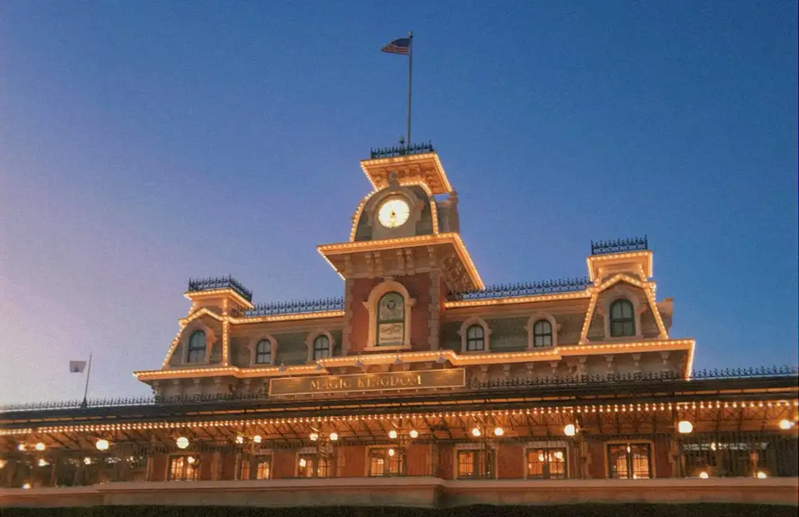

Park Strategies
When planning your trip, it's important to know what your priorities are. Some people love the shows and characters, and some people are only there for rides. Knowing what you want to get out of your trip will help you make a plan. Here are my recommended strategies for each park. It is important to note that I love rides and prioritize those, but there are a few shows and characters that I would never skip. So keep that in mind as you look through my suggestions and adjust your plan around that.
Magic Kingdom
- Rope Drop: Tron. Tron isn't open during Early Entry, but it is still valueable to spend that 30 extra minutes waiting for Tron. It is usually a 90 minute wait, so getting in line before most people are in the park is a very good idea.
EPCOT
- Rope Drop: Cosmic Rewind. This is the best ride at Disney World. It is consistantly a 60-90 minute wait, so using your rope drop or better yet early entry time is going to be very helpful.
Hollywood Studios
- Rope Drop: Tower of Terror/ Rock 'n' Roller Coaster.
Animal Kingdom
- Rope Drop: Flight of Passage. This ride is so incredible, and is usually a very long wait compared to the rest of the attractions in the park.
- Get breakfast in Africa. Tamu Tamu and Kusafari Bakery.
- Ride the Safari. The animals in the Safari are usually more active in the morning, so it is a good idea to do it early on.
- Gorilla Falls Trail. Go see the cute gorillas.
- Rafiki's Planet Watch. This is where the petting zoo and Animation Experience are going to be.
- Eat Lunch at Harambe Market. In my opinion this is the best food in the park, and it's only open for lunch, so it's good ot do it now. This would also be a good time to get a dole whip from Tamu Tamu.
- Feathered Friends in Flight. This is an awesome show with all kinds of cool birds and interactive elements.
- Ride Expedition Everest. Make your way to Asia and ride the tallest coaster in Disney World.
- Maharajah Jungle Trek. Go see the cute baby tiger.
- Ride Dinosaur. Go to what is left of Dinoland and ride this really cool attraction before it goes away forever.
- Discovery Island. Go see the tree of life, and the trails on animals around it.
- Eat Dinner at Flame Tree BBQ. This is the perfect option for dinner. They have somwthing for everyone.
- Extra Time. Use the rest of the time to repeat your favorite attractions and anything else you want to do.
Trip Length
- 4 days: One day for each park.
- 5 days: One day for each park, and a 5th park hopper day to fit in anything you missed, or do your favorites again.
- 5 days: One day for each park, and a rest day. On your rest day you can explore resorts, go to Disney Springs, go swimming at your resort, or explore somewhere else in Florida.
- 6 days: One day for each park, a 5th park hopper day, and a rest day.